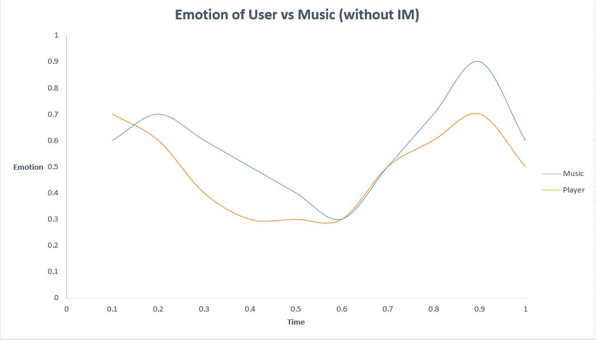
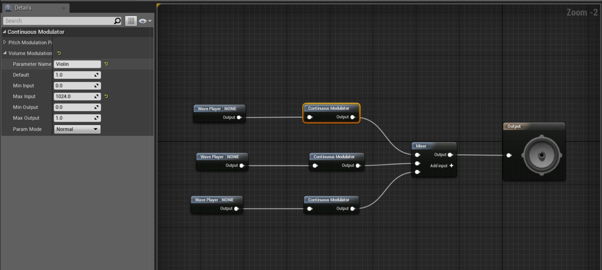
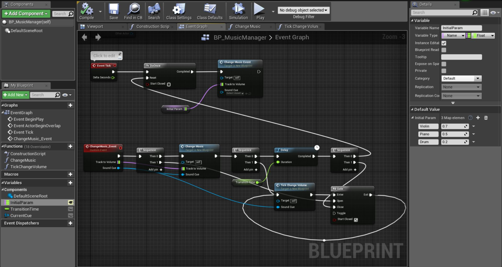

Introduction to Interactive Music
We will take a walkthrough of concept, example and implementation experience.
Outlines: What is Interactive Music? , How IM works?, Some examples, Implementation in Unreal, Conclusion
What is Interactive Music?
Interactive Music (referred to as IM below) is an auditory experience during an interaction , which music changes along side the emotion wave of the one who interacts. The music will correspond to the action user made, then the music will change in variety kinds of way, in order to enhance the experience.

Currently, the article here will mainly discuss about it in game aspect. So if we want to make interactive music happen, it will be all based on the actions that users trigger deliberately or not . We call them events. For example, jumping, detected by enemies, in bad condition...something like that.
How IM works?
Let's talk about sound first.
Imagine another situation, a virtual world is becoming a hell, where flames throw everywhere. And we compose some music or sound to satisfy the experience of despair and fear. But it's a wide open world. Explosions, relative hot area, indoor environment...and so on. Based on different environments, if we want to make the experience more immersive, the auditory things should have some change.
Let's see the other examples in No Man's Sky. The left is about indoor environmental change, and the right is about raining on glasses. Remember to turn up the volume.
And music is some thing more complicated.
Think of one example, a concert, which every instrument has their own role in the music. Like trumpets, they emerge in high tempo as the emotion of the music goes up, and violin slowly plays solo as the music returns to calm state. We might have preference over some part of music, which reflect our mood. But the composition of the music is fixed. And that's where IM comes in, to serve as a diversifying role.
In this case, we've got seven common approaches, from simple to complicated:
- Track transition via cross-fade
- Ducking (when certain sound has top priority over current sound, its fading is called ducking)
- DSP effect
- Pitch shift
- Tempo shift
- Layering (Known as vertical transition)
- Block looping (Known as horitonzal transition)
And there's some timing to put these changes smoothly, we called it Quantitized shift:
- Immediate
- Grid (self-defined interval)
- Beat
- Bar
- Cue (when the current track finished playing)
These are the basic elements of IM.
Some examples
Let's give a listen to IM in Portal 2 . It was not the earliest application, but one the most effective example during the period.
As you can see, when the player movement is dynamically changing, here goes the variation music based on background music. Most of the IM approaches are called Musical effect. That is to synchronize sound effect with music.
And next example is Nier:Automata, see it from 11:30 and 14:20:
Nier:Automata has the most beautiful music in recent years. The technique here is what we called "layering" we mentioned above. Tracks continuously replace each other when states change. Also, "Ducking" is used here. When some high priority sound emerge(like serif in the video), all other sounds fade. It's pretty simple within audio plugins like Wwise or CriWare. So the most important thing for this case is not to ruin the beauty of the song.
Implementation in Unreal
Take a look at a simple example of Layering. This is a project I first tried to integrate Wwise plugin with UE4. Thanks to Nier:Automata's epic music, it's easy to emphasize the concept.
There are some features you might not notice in this demonstration.
- The change in tracks(instrument) is what we called "Vertical transition".
- Transitions in cross-fade fashion occur in next bar.
- Low-pass filter is enabled in an instant.
- There are some tracks without looping(about the first 8 seconds in the demo), which are not supposed to be transitioned. So we have to make sure that transitions would occur after certain duration.
And here's a primitive method to do layering based on Unreal's sound system. If Wwise can't fulfill the need (which is of very few cases I think), or you want to have a rapid prototype, try this:
- 1. Create a sound cue.
- 2. Set up tracks you're hoping to make transition.
- 3. Connect a continuous modulator after your every player node.
- 4. Set up parameter name in every continuous modulator node. This action enables us to use blueprints to control the transition.
- 5. Set up max input to at least value of 1024. It prevents tracks from disassembling with each other and plays tracks in low volume, which players can't hear. (Because when volume is set to zero, Unreal Engine would consider the track as stopped, means the playing position would be set to 0.)
- 6. Connect a mixer to output. 
- 7. Set up a blueprint to make transition. My interface design would give a map structure(track name as key and volume float as value) to the manager, and you also can set some delay nodes to do the cross-fade. So it's basicly an event for local call.
- 8. Set up triggers for activating the transition!
I list a few here. There's much more approaches to be found. If there's more things I've learned, I will do my best to share.
Conclusion
The application of IM is pretty wide. By knowing the goal of interaction, the design should always support users to get to the goal. In cases of games, the definition of goal is not very clear, because the goal is to make player happy. So it comes to emotion, then the music. Hope everyone can design a new sensation for IM. Making games more interesting should always provide developers like us more fun, isn't it?